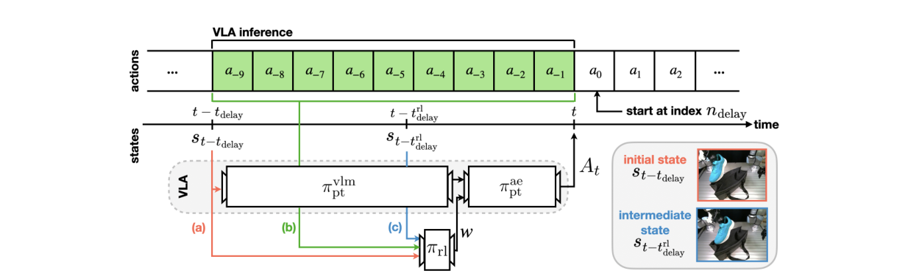
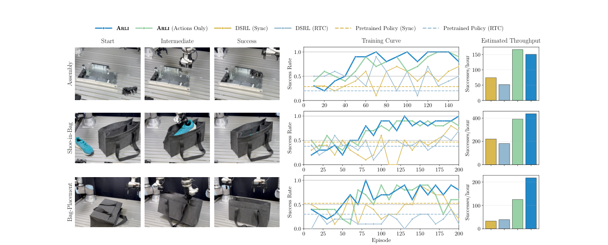

제출: 2026년 8월 24일 (v2 8월 26일) · 실기 양팔 UR5e · 기반 정책 π0.5 (60Hz, 청크 50) · RTX 5090
한 줄 요약 (TL;DR)
큰 VLA를 강화학습으로 계속 개선하고 싶은데, 추론이 느려서 로봇이 멈칫하거나 덜컹거린다. 이를 피하려면 이전 동작을 실행하는 동안 미리 다음을 계산하는 비동기 방식을 써야 하는데, 그러면 RL 정책이 낡은 화면을 보고 결정하게 돼 마르코프 성질이 깨지고 학습이 아예 실패한다. 이 논문의 해법은 단순하다 — RL 정책이 보는 상태에 두 가지를 더 넣는다: ① 계산하는 동안 이미 실행하기로 확정된 행동들, ② 추론 막바지에 새로 찍은 중간 관측. 이 둘이 "계산이 끝날 무렵 로봇이 어디에 있을지"를 거의 복원해 준다. 실기 3개 태스크에서 기반 정책 약 40%에서 시작해 100~125 에피소드 만에 거의 100%에 도달했고, 기존 DSRL은 같은 시간에 80%에도 못 미쳤다.
1배경 · 문제의식
배포 중에 쌓이는 경험으로 로봇을 계속 개선하는 데 강화학습이 유력하다. 그런데 요즘 일반주의 정책(generalist policy — 여러 태스크·로봇을 한 모델로 다루는 대형 VLA)은 덩치가 커서 추론이 느리고, 이것이 근본적인 걸림돌이 된다.
해결책으로 쓰이는 것이 비동기 추론이다. 지금 행동 묶음을 실행하는 동안 다음 묶음을 미리 계산해 두면, 계산을 기다리며 멈추는 일이 없다. 문제는 그 계산을 시작하는 시점에는 그 시점의 화면밖에 없다는 것 — 실제로 실행될 때쯤이면 상황이 달라져 있다.
왜 RL이 특히 무너지나: 강화학습은 "지금 상태만 보면 무엇을 할지 정할 수 있다"는 마르코프 가정 위에 서 있다. 그런데 지연이 있으면 행동이 과거 상태를 보고 정해지고, 그 사이 벌어진 일은 정책이 모른다. 저자들의 표현대로 이 가정이 깨지면 표준 RL이 완전히 실패한다(fail completely).
기존 완화책인 RTC(Real-Time Chunking, 앞뒤 행동 묶음이 매끄럽게 이어지도록 이전 묶음의 남은 행동을 추론에 끼워 넣는 기법)는 덜컹거림은 줄여 주지만, 여전히 추론 시작 시점의 정보만 쓴다. 즉 낡은 정보 문제 자체는 그대로다.
2핵심 Contribution
"확정된 행동"을 상태에 넣기 — 추론이 도는 동안 이미 실행하기로 정해진 행동들을 RL 정책의 입력에 추가한다. 출발 상태와 그 행동들을 함께 알면 계산이 끝날 무렵 로봇이 어디에 있을지를 상당 부분 추정할 수 있다.
"중간 관측"을 상태에 넣기 — 추론 막바지에 한 번 더 찍은 관측을 추가한다. 지연의 대부분은 앞단 VLM이 잡아먹으므로, 뒤쪽에서 찍은 이 관측이 실행 시점 상태에 훨씬 가깝다.
지연 아래 RL이 실패하지 않음을 실증·이론 양면으로 — 표준 RL이 아예 학습하지 못하는 조건에서 효과적 미세조정을 해내고, 지연이 없는 이상적 설정의 RL과 맞먹거나 능가하기까지 한다. 지연에 따른 최적성 손실의 상한도 함께 제시한다.
3Method
기반: DSRL로 VLA를 "조종"하기
큰 VLA를 직접 학습시키는 대신, 이 논문은 DSRL 방식을 쓴다 — VLA가 행동을 생성할 때 출발점으로 쓰는 노이즈를 RL 정책이 골라 주어 결과를 원하는 쪽으로 유도하는 것이다. 무거운 VLA는 건드리지 않고 작은 RL 정책만 학습하면 된다.
비유: 화가(VLA)에게 붓을 쥐여 주는 대신, 어떤 밑그림에서 시작할지만 골라 주는 셈이다. 화풍은 그대로 두고 결과만 원하는 방향으로 민다.
문제: 순진하게 적용하면 안 된다
추론이 시점 t−tdelay에 시작된다고 하자. 순진한 DSRL은 RL 정책도 같은 시점 상태를 보고 노이즈를 고른다. 하지만 그 결과는 tdelay스텝 뒤에야 실행된다. 이 시차 때문에 학습이 제대로 되지 않는다.
해법: RL 정책이 보는 상태를 세 조각으로
ARLI는 RL 정책의 입력(논문에서 "RL 상태")을 다음 셋의 조합으로 바꾼다.
(a) 초기 상태
추론이 시작된 시점의 관측 — 원래 쓰던 것
(b) 확정 행동들
추론이 도는 동안 실행될, 이전 묶음에서 이미 정해진 행동들. 어디로 움직이는 중인지를 알려준다
(c) 중간 관측
추론 막바지에 다시 찍은 관측. 여전히 약간 늦지만, 지연의 대부분을 차지하는 VLM 단계가 끝난 뒤라 실행 시점에 훨씬 가깝다
핵심 타이밍은 이렇다. 무거운 VLM 백본이 먼저 돌고, 그 결과가 나올 즈음 작은 RL 정책이 (a)(b)(c)를 보고 노이즈를 골라 액션 전문가에 넘긴다. RL 정책은 가볍기 때문에 추론 막바지에 끼워 넣을 수 있고, 그래서 가장 최신 정보를 쓸 수 있다.
RTC와의 관계
ARLI는 RTC를 함께 쓴다. RTC는 앞뒤 묶음의 연속성을 보장해 덜컹거림을 막고, 그 역할은 명시적으로 강제하는 편이 학습 속도를 해치지 않는다. 다만 저자들은 차이를 분명히 한다 — RTC가 이전 행동을 쓰는 것은 "이어지게" 하려는 목적뿐이지만, ARLI의 RL 정책은 같은 정보를 훨씬 풍부한 행동을 학습하는 데 활용한다.
이론적 뒷받침
지연된 상태로 계획해도 성능 손실이 제한적임을 지연 최적성 격차(delayed optimality gap)라는 양으로 정식화해 상한을 제시한다. 환경이 일정 조건을 만족하면 지연 때문에 잃는 성능이 이 값 이하로 묶인다는 것이다.
4실험 결과
실기 (양팔 UR5e, 3개 태스크)
태스크는 조립(전원 커넥터를 두 핀에 맞춰 인버터 박스에 삽입), 신발 담기(신발을 집어 좁은 가방에 넣기), 가방 배치(양팔로 누운 가방을 집어 정면과 평행하게 놓기)다. 기반 정책은 π0.5를 태스크별 소량 시연으로 미세조정한 것(60Hz, 행동 묶음 길이 50)이다.
핵심 결과: 기반 정책 성공률 약 40%에서 시작해, ARLI는 100~125 에피소드 만에 세 태스크 모두 거의 100%에 도달했다. 같은 시간에 DSRL(동기)과 DSRL(RTC)은 조립·가방 배치에서 80%에도 못 미쳤고, 신발 담기에서는 ARLI를 따라잡는 데 거의 두 배의 시간이 걸렸다. 시간당 성공 횟수로 환산한 처리량도 전 태스크에서 ARLI가 크게 높았다.
저자들이 강조하는 점: 비동기 추론 없이는 기반 정책 자체의 성공률도 낮고 RL 학습이 매우 느리거나 아예 학습되지 않는다. 즉 이 태스크들에서 비동기 추론은 선택이 아니라 필수이고, ARLI는 그 조건에서 RL을 가능하게 만든다.
시뮬레이션
Kinetix(반응성이 요구되는 동적 환경) 중 사전학습 정책 성공률이 낮은 mjc swimmer·mjc walker·car launch 세 가지와, AlohaTransferCube(양팔 조작, 큰 지연 상황을 모사)를 쓴다. 후자의 기반 정책은 3.3B 파라미터 π0의 Aloha 미세조정본이고 지연을 20스텝으로 크게 잡았다. 네 태스크 모두에서 ARLI가 순진한 DSRL 적용을 크게 앞선다(3개 시드 평균).
5Ablation
둘 다 있어야 한다: 중간 상태만, 또는 확정 행동만 넣은 변형과 비교하면, 둘을 함께 넣을 때가 확연히 좋다. 어느 하나로는 부족하다는 것이 이 설계의 근거다.
실기에서는 행동만으로도 상당 부분 커버된다: 다만 가방 배치 태스크에서는 "확정 행동만" 변형이 높은 성공률로 수렴하지 못했다. 태스크에 따라 중간 관측이 결정적일 수 있다.
지연이 커져도 덜 무너진다: 지연 값을 늘려가며 비교하면 RTC를 쓴 ARLI의 성능 하락이 DSRL보다 완만하다.
6핵심 Figure / Table

Figure 2 — ARLI의 타이밍 구조. 위쪽 줄은 행동, 아래쪽 줄은 상태. 추론은 다음 묶음이 필요한 시점보다 tdelay만큼 앞서 시작하고, VLM 백본이 초기 상태를 입력받는다. 추론 막바지(t−trldelay)에 작은 RL 정책이 (a) 초기 상태 · (b) 실행 확정된 중간 행동들 · (c) 새로 찍은 중간 관측을 받아 노이즈를 고르고, 이것이 액션 전문가에 들어간다. 오른쪽은 초기 관측과 중간 관측의 실제 화면 차이 — 그사이 신발이 움직였음을 보여준다. (출처: arXiv:2608.23831)

Figure 5 — 실기 3개 태스크 결과. 왼쪽은 태스크 장면(조립·신발 담기·가방 배치), 가운데는 학습 곡선(최근 10 에피소드 평균 성공률), 오른쪽은 시간당 성공 횟수로 환산한 처리량. ARLI가 100~125 에피소드 만에 거의 100%에 도달하는 반면 DSRL 계열은 뒤처진다. (출처: arXiv:2608.23831)